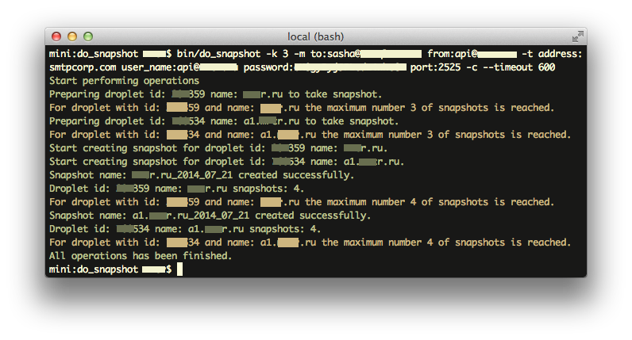
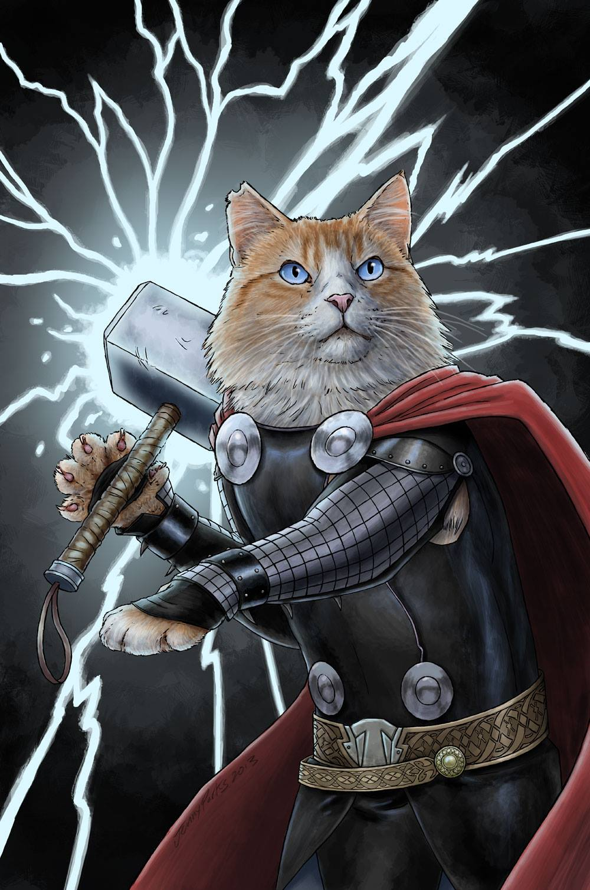

Command Line Applications Ruby
Alexander Merkulov
DO_Snapshot CLI
$ do_snapshot help s
Usage:
do_snapshot c / s / snap / create
Options:
-p, [--protocol=1] # Select api version.
# Default: 1
-o, [--only=123456 123456 123456] # Select some droplets.
-e, [--exclude=123456 123456 123456] # Except some droplets.
-k, [--keep=5] # How much snapshots you want to keep?
# Default: 10
-d, [--delay=5] # Delay between snapshot operation status requests.
# Default: 10
-m, [--mail=to:yourmail@example.com] # Receive mail if fail or maximum is reached.
-t, [--smtp=user_name:yourmail@example.com] # SMTP options.
-l, [--log=/Users/someone/.do_snapshot/main.log] # Log file path. By default logging is disabled.
-s, [--stop], [--no-stop] # Stop creating snapshots if maximum is reached.
-v, [--trace], [--no-trace] # Verbose mode.
-q, [--quiet], [--no-quiet] # Quiet mode. If don't need any messages and in console.
Description:
`do_snapshot` able to create and cleanup snapshots on your droplets.Looking for gems &
best practices
- Rake
- OptionParser
- Optitron
- Commander
- Main
- ...
- manually
- build it anywhere else
Base features & facts comparison
| Feature | OP | Thor | GLI |
|---|---|---|---|
| Number of downloads | as Ruby | 63 596 500 | 898 088 |
| Authors | Community | Y. Katz | D. Copeland |
| No runtime dependencies | Yes | Yes | Yes |
| The argument specification and the code | Yes | Yes | Yes |
| Output an option summary | Yes | Yes | Yes |
| Optional and mandatory arguments | Yes | Yes | Yes |
| Arguments can be automatically converted | Yes | Yes | Yes |
| Arguments can be restricted to a certain set | Yes | Yes | Yes |
Options & arguments comparison
| Feature | OP | Thor | GLI |
|---|---|---|---|
| Advanced option mode | No | Yes | No |
| Multiple options one-liner | No | Yes | No |
| Options order | No | Yes | No |
| Array arguments | No | Yes | Yes |
| Hash arguments | Yes/No | Yes | No |
| Enum arguments | No | Yes | No |
| Global(class-wide) arguments | No | Yes | No |
Advanced features comparison
| Feature | OP | Thor | GLI |
|---|---|---|---|
| Description helper | No | Yes | Yes |
| Long description helper | No | Yes | Yes |
| Actions | No | Yes | Yes/No |
| Subcommands | No | Yes | Yes |
| Easy Child class loading | No | Yes | No |
| Minimalistic application codebase | No | Yes | Yes/No |
| Actively maintains | Yes/No | Yes | Yes |
| Fancy colors | No | Yes | No |
GLI davetron5000/gli
Git-Like Interface Command Line Parser

- Useful if you work on monolith binary.
- Quite readable code.
- No OOP required :)
- Has scaffold generator with TDD/BDD approach.
- Regular updates.
$ gli init some command version
├── Gemfile
├── README.rdoc
├── Rakefile
├── bin
│ └── some # our binary
├── dist # tools for deploy
├── features # if cucumber
│ ├── some.feature
│ ├── step_definitions
│ │ └── some_steps.rb
│ └── support
│ └── env.rb
├── lib
│ ├── some
│ │ └── version.rb
│ └── some.rb
├── some.gemspec
└── test
├── default_test.rb
└── test_helper.rbAdd some commands
desc 'DEFAULT. Create and cleanup snapshot\'s'
command [:s, :snap] do |c|
c.desc 'Select api version.'
c.arg_name '1'
c.flag [:p,:protocol], default_value: 2, type: Numeric
c.desc 'How much snapshots you want to keep?'
c.arg_name '5'
c.flag [:k,:keep], default_value: 10, type: Numeric
...
c.desc 'Stop creating snapshots if maximum is reached.'
c.switch [:s,:stop]
c.action do |global_options,options,args|
DoSnapshot::Command.new(options).snap
end
end
desc 'Shows the version of the currently installed DoSnapshot gem'
version DoSnapshot::VERSION
Add some logic
pre do |global,command,options,args|
$some_service = DoSnapshot::Service.new(options)
true
end
post do |global,command,options,args|
$some_service = nil
end
on_error do |exception|
$some_service.send(exception)
end
exit run(ARGV)But what with Array, Hash arguments?
Custom parsers
accept Array do |value|
value.split(/\s/).map(&:strip)
end
accept Hash do |value|
result = {}
value.split(/\s/).each do |pair|
k,v = pair.split(/:/)
result[k] = v
end
result
end
...
desc 'SMTP options.'
arg_name 'user_name:yourmail@example.com'
flag :smtp, type: Hash$ do_snapshot -k 5 --smtp=user_name:user1 password:123456Time to try :)
$ do_snapshot help
NAME
do_snapshot - `do_snapshot` able to create and cleanup snapshots on your droplets.
SYNOPSIS
do_snapshot [global options] command [command options] [arguments...]
GLOBAL OPTIONS
-c, --clean=arg - Cleanup snapshots after create. If you have more images than you want to `keep`, older will be deleted. (default: true)
-d, --delay=5 - Delay between snapshot operation status requests. (default: 10)
--digital_ocean_access_token=YOURLONGAPITOKEN - DIGITAL_OCEAN_ACCESS_TOKEN. if you can't use environment. (default: none)
--help - Show this message
-k, --keep=5 - How much snapshots you want to keep? (default: 10)
-l, --log=/Users/someone/.do_snapshot/main.log - Log file path. By default logging is disabled. (default: none)
-p, --protocol=1 - Select api version. (default: 2)
--smtp=user_name:yourmail@example.com - SMTP options. (default: none)
-q, --quiet=arg - Quiet mode. If don't need any messages and in console. (default: none)
-s, --stop=arg - Stop creating snapshots if maximum is reached. (default: none)
--timeout=250 - Timeout in sec's for events like Power Off or Create Snapshot. (default: 3600)
-v, --trace=arg - Verbose mode. (default: none)
COMMANDS
version - Shows the version of the currently installed DoSnapshot gem
help - Shows a list of commands or help for one command
s, snap - DEFAULT. Create and cleanup snapshot'sWhat about tests?
- RSpec/Minitest
- Aruba
- Cucumber
Feature test
# features/some.feature
Feature: My bootstrapped app kinda works
In order to get going on coding my awesome app
I want to have aruba and cucumber setup
So I don't have to do it myself
Scenario: App just runs
When I get help for "some"
Then the exit status should be 0
# features/step_definitions/some_steps.rb
When /^I get help for "([^"]*)"$/ do |app_name|
@app_name = app_name
step %(I run `#{app_name} help`)
endTHOR erikhuda/thor


- Thor is a toolkit for building powerful command-line interfaces.
Widely used . - Easy to split monolith application.
- The syntax is Rake-like.
- Thor is more than just option parser
- A lot of tutorials.
├── bin
│ └── do_snapshot
├── dist
│ ├── ...
│ ├── gem.rake
│ ├── manifest.rake
│ └── zip.rake
├── lib
│ ├── do_snapshot
│ │ ├── cli.rb
│ │ ├── command.rbb
│ │ ├── log.rb
│ │ ├── runner.rb
│ │ └── ...
│ └── do_snapshot.rb
├── spec
│ ├── do_snapshot
│ │ └── ...
│ ├── fixtures
│ ├── support
│ │ ├── aruba.rb
│ │ └── ...
│ ├── do_snapshot_spec.rb
│ └── spec_helper.rb
├── Gemfile
├── README.md
├── Rakefile
└── do_snapshot.gemspec
- bin
- Binary file(s)
- dist
- Rake deploy scripts
- lib/*/runner
- Application runner
- lib/*/cli
- CLI monolith or parent
- lib/*/command
- Command interface
- lib/*/log
- Application logger
- spec
- RSpec tests including features & fixtures
Binary
#!/usr/bin/env ruby
Signal.trap('INT') { exit 1 }
# resolve bin path, ignoring symlinks
require 'pathname'
bin_file = Pathname.new(__FILE__).realpath
# add self to libpath
$LOAD_PATH.unshift File.expand_path('../../lib', bin_file)
require 'do_snapshot/runner'
DoSnapshot::Runner.new(ARGV.dup).execute!
Runner
class Runner
def initialize(argv, stdin = STDIN, stdout = STDOUT, stderr = STDERR, kernel = Kernel)
@argv, @stdin, @stdout, @stderr, @kernel = argv, stdin, stdout, stderr, kernel
end
def execute!
exit_code = begin
run_cli
rescue StandardError => e
display_backtrace_otherwise(e)
rescue SystemExit => e
e.status
ensure
clean_before_exit
end
@kernel.exit(exit_code)
end
...
endSample CLI monolith
Sample class for CLI application.
map - mapping commands.
initialize - prepare environment.
no_commands - define helper or private methods.
module DoSnapshot
class CLI < Thor
include DoSnapshot::Helpers
default_task :snap
map %w( c s create ) => :snap
map %w( -V ) => :version
def initialize(*args)
super
# custom initialization
end
...
no_commands do
# define helpers
end
end
end
THOR DSL
desc - description & shortcuts
long_desc - multiline command description.
method_option - command option
desc 'c / s / snap / create', '...'
long_desc <<-LONGDESC
`do_snapshot` able to create snapshots ...
VERSION: #{DoSnapshot::VERSION}
LONGDESC
method_option :mail,
type: :hash,
aliases: %w( -m ),
banner: 'to:yourmail@example.com',
desc: 'Receive mail if fail or maximum is reached.'
def snap
...
endmethod_option
- aliases — A list of aliases for option.
- banner — The short description of the option, printed out in the usage description.
- default — The default value of this option if it is not provided.
- lazy_default — A default that is only passed if the cli option is passed without a value.
- desc — A description for the option.
- required — Indicates that an option is required
- type — :string, :hash, :array, :numeric, or :boolean
- enum — A list of allowed values for this option.
Thor actions
- say
- ask
- yes?
- no?
- add_file
- ...
- copy_file
- template
- inside
- run
Test tools
- RSpec
- Aruba
- Webmock
- Rake
Aruba & RSpec are friends
# support/aruba.rb
require 'aruba/rspec'
require 'do_snapshot/runner'
Aruba.configure do |config|
config.command_launcher = :in_process
config.main_class = DoSnapshot::Runner
endAruba useful helpers
- run
- run_simple
- all_stdout
- all_stderr
- all_output
- expand_path
- with_environment
Aruba within RSpec
RSpec.describe DoSnapshot::Runner, type: :aruba do
context 'commands' do
context '.help' do
it 'shows a help message' do
run 'do_snapshot help'
expect(all_stdout)
.to match('Commands:')
end
end
context '.version' do
it 'with right version' do
run 'do_snapshot version'
expect(all_stdout).to include(DoSnapshot::VERSION)
end
end
end
endCheck output
Best practices:
- Deploy to repository of your choice.
- Use single Rake task for pushing to any service.
- Provide zip, tgz packs of your CLI app.
- Use Rubocop & Coverage metrics.
- Don't be too lazy to write tests.
- Semantic versioning.
- Provide docs or/and wiki.
- ...
- So, as for any Ruby application.
Examples & How-to
Happy coding!
Thanks!
Q?
2015